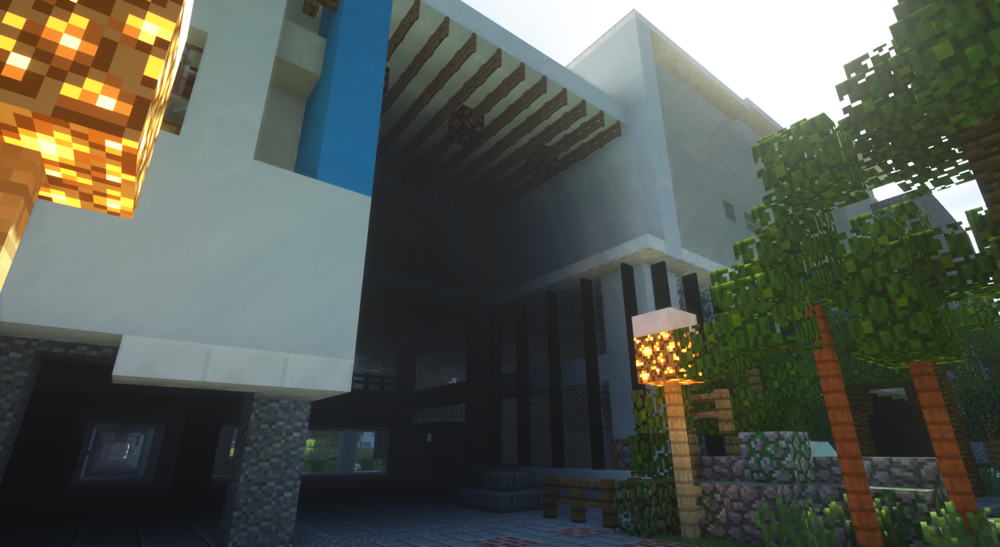

Welcome to Project NNKIEH test page.
This page is under construction.
DO NOT SPREAD TO THE PUBLIC
DO NOT SPREAD TO THE PUBLIC
DO NOT SPREAD TO THE PUBLIC
供中文嘛欸通
Author : Ayuki 613021

Outline
Project NNKIEH is a project held by 109th graduation student Ayuki.
Who is the author あゆき ?
- Real Name : Min-Yang Chiang
- Student Number : 613021
- Graduate Class : 312
- Homeroom Teacher : Song.
- Best Friend : Nayu
- Favorite Idol : Hatsune Miku
Some words
- 抱歉拖了那麼久啦，讓大家久等ㄌ
- 這是2020年的南科實中備份，跟現在不一樣的地方我是不會改ㄉ
- 怎麼沒有操場？沒有宿舍？當然是還沒蓋阿，至於會不會蓋，看我心情
- 高三四教室為啥那麼油？本來還更油欸，我換上Miku比較保護眼睛
- 其實FRC四樓的教室還沒蓋好啦，照片還沒要到，去問蔡汶鴻為什麼不看我訊息
- 講那麼多廢話，載點ㄋ拿來ㄛ 賀啦拿去 Download